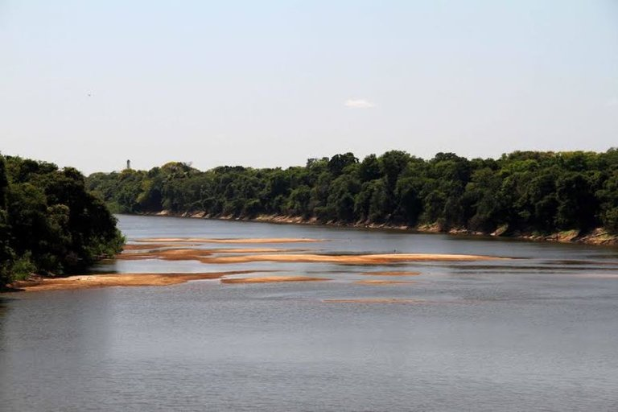
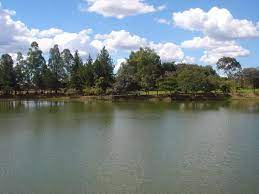
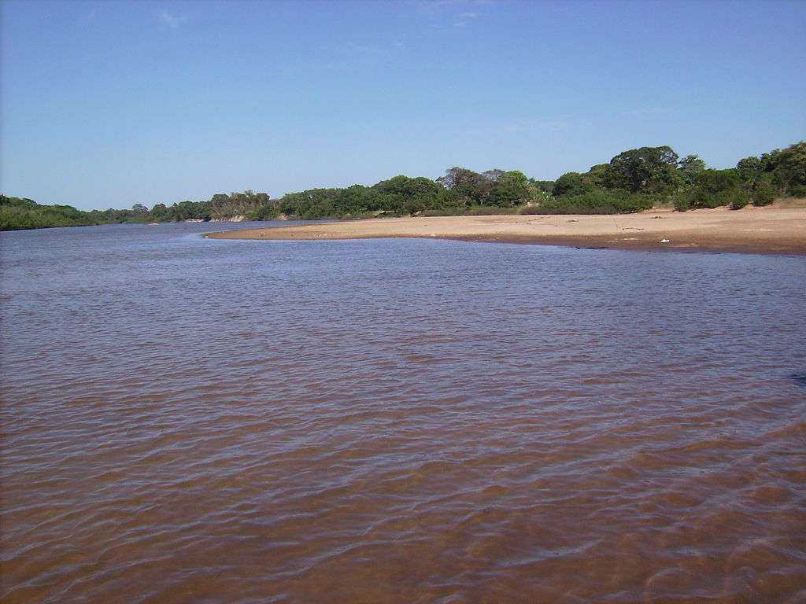
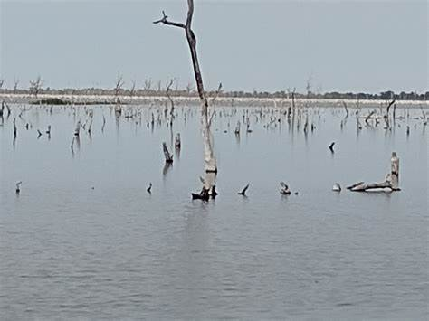
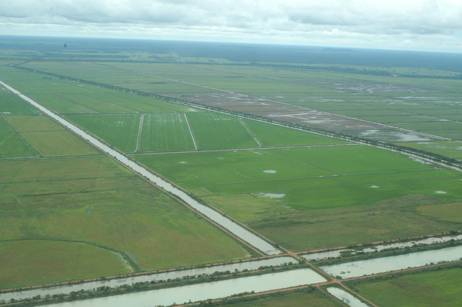
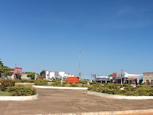
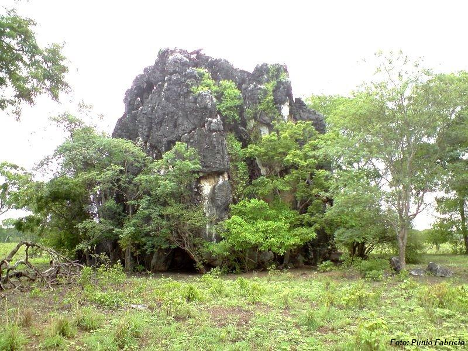

Com área de cerca de 25 mil km², a Ilha do Bananal é considerada a maior ilha fluvial do mundo,
localizada no Tocantins entre dois grandes rios, que são o Javaés e o Araguaia.

Área Rural Rio Formoso Rio que denomina a cidade, ponto privilegiado de observação de fauna,
incluindo botos, ararinhas, capivaras, além de diversos pássaros.
Lago Taboca Criado para a irrigação do Projeto Rio Formoso, tornou-se ponto famoso para a pesca de
tucunaré, pirarucu, pintado, aruanã, etc.

Lago municipal de Formosos do Araguaia, cartão postal da cidade. Um lago urbano com uma pista de
caminhada na margem

Um dos rios que delimita a Ilha do Bananal, é base da organização do Povo Javaé. Tem como
característica diminuir o volume das águas no período de seca (maio a outubro) e o acúmulo de areia
no seu leito.

A água flui de uma fenda na rocha calcária, formando um lago de águas salobras, incolores e
cristalinas, ótimas para banhos.

O Projeto Rio Formoso localizado em Formoso do Araguaia – TO, é classificado como o maior projeto de
Irrigação de áreas contínuas da América Latina. Possui uma área total de 27.787 hectares, que
funcionam através de um sistema de irrigação tanto por inundação quanto por subirrigação.

Comida a Av. Perimetral, 456-570 - São José, Formoso do Araguaia - TO, 77470-000, Brasil. Aqui você
encontrará informações detalhadas sobre Comida: endereço, telefone, fax, horário de funcionamento,
comentários de clientes, fotos, direções e muito mais.

Ruínas de pedra usadas como abrigo, com pinturas nas paredes que agora viraram um museu de artes
natural.